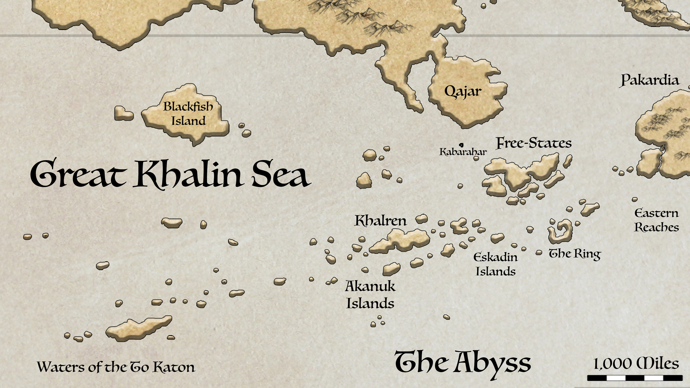
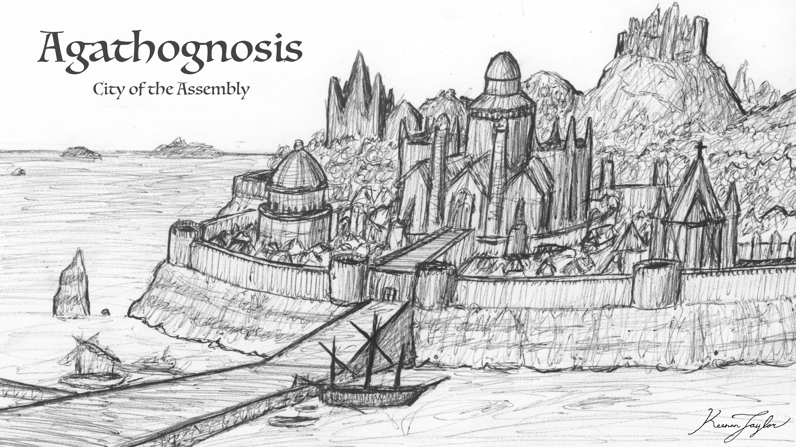
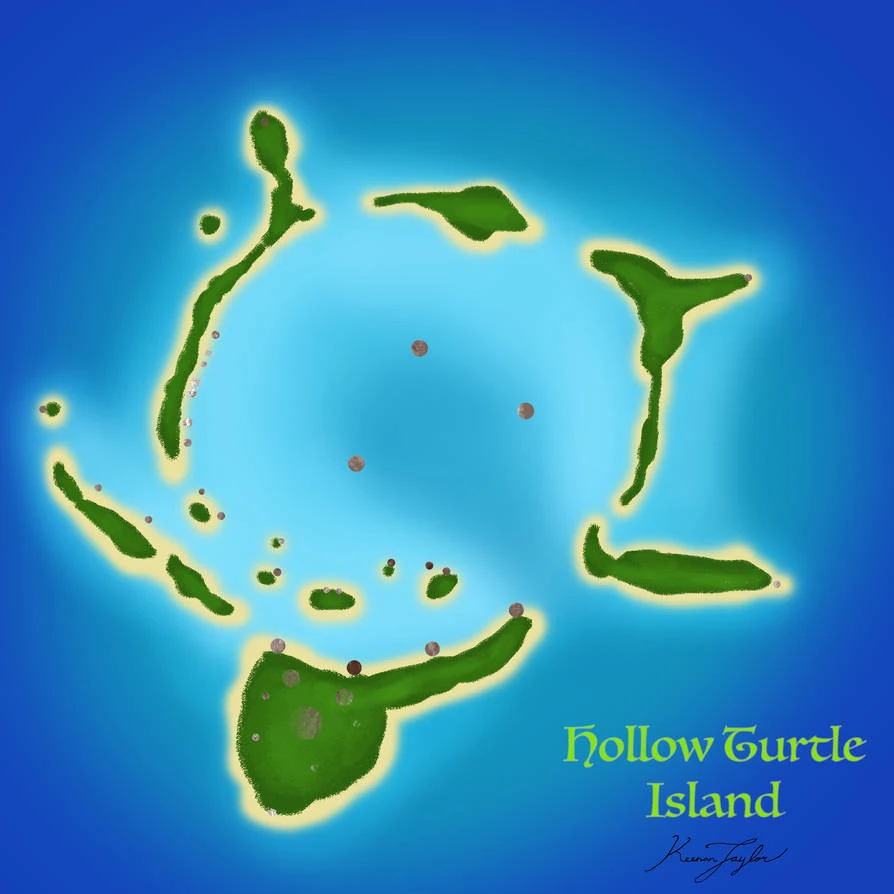

01 · INTRODUCTION
Overview

The Khalin Archipelago constitutes one of the largest and most ecologically complex island systems within the Known World. Occupying the central and eastern portions of the Great Khalin Sea, the archipelago forms a vast maritime realm extending from the southern approaches of Qajar and the Qadanith Archipelago to the outer island groups approaching Pakardia and the open waters of the Great Abyss. Collectively, these islands comprise thousands of individual landforms ranging from isolated volcanic peaks and mountainous islands several hundred miles in diameter to low coral atolls, limestone platforms, sea stacks, and submerged banks barely rising above the surrounding ocean.
Unlike many archipelagic on Kaimeran systems whose ecological character is defined primarily by tropical climates, the Khalin Archipelago occupies a transitional zone between multiple climatic regimes. Warm subtropical currents arriving from Pakardia interact with cooler oceanic waters originating from the southern reaches of Kaimere, producing a broad mosaic of environmental conditions that vary significantly from island to island. Consequently, the archipelago contains Mediterranean woodlands, humid subtropical forests, temperate rainforests, coastal grasslands, volcanic uplands, cloud forests, mangrove systems, and extensive marine ecosystems within a relatively confined geographic region.
The biological significance of the archipelago derives not only from its environmental diversity but also from its long history of isolation. Many islands support endemic species found nowhere else on Kaimere, while others preserve relict faunas whose nearest relatives disappeared from continental environments millions of years ago. The surrounding seas are among the most productive marine environments of the Known World, supporting immense fisheries and some of the highest concentrations of marine predators documented outside the polar oceans. Culturally, the archipelago serves as the historical heartland of numerous maritime civilizations collectively known as the Khalin peoples. For millennia these societies have maintained extensive networks of trade, navigation, exploration, and cultural exchange that have linked distant regions of the Known World. The islands therefore occupy a position of exceptional importance not only biologically and geographically but also politically and economically, forming one of the primary maritime crossroads of Kaimeran civilization.
02 · Beginnings
Geological Origins and Geographic Context

The Khalin Archipelago owes its existence to a prolonged history of tectonic instability that began during the latter stages of the Tyrant Dynasty. During this period significant crustal deformation occurred beneath what is now the Great Khalin Sea. Mantle upwelling and extensive volcanic activity produced a broad arc of volcanic islands extending across thousands of miles of ocean. Repeated eruptions over tens of millions of years built enormous volcanic edifices from the seafloor. Some emerged as large mountainous islands while others remained partially submerged as seamounts and submarine plateaus. Continued volcanic activity generated overlapping island chains whose remnants remain visible today in the distribution of the Akanuk Islands, Eskadin Islands, Isles of Otro, Khalren, and numerous smaller archipelagos.
As volcanic activity gradually waned, erosional processes became the dominant force shaping the landscape. Rainfall, coastal wave action, landslides, and chemical weathering reduced many volcanic peaks, while tectonic subsidence caused others to sink beneath the sea. Coral reefs and marine carbonate deposits subsequently accumulated around many subsiding islands, creating extensive limestone platforms and atoll systems. The modern archipelago therefore consists of islands representing multiple stages of geological evolution. Young volcanic islands retain rugged topography, active geothermal systems, and steep mountainous interiors. Older islands exhibit deeply weathered landscapes characterized by rounded hills, fertile volcanic soils, and extensive river valleys. The oldest formations survive primarily as low limestone islands and coral atolls surrounding ancient volcanic cores now submerged beneath the ocean surface.
Geographically, the archipelago occupies a strategic position between the continental masses of Arvel and Pakardia. To the north lie the southern coastlines of Arvel and the peninsulas surrounding Qajar. To the east the island chains gradually merge with the western approaches of Pakardia. To the south and southwest the continental shelf descends into the deep oceanic regions known as the Waters of the To Katon and the Abyss. This position places the archipelago directly within the pathway of several major ocean currents and atmospheric circulation systems, making it one of the most interconnected marine regions in the Known World.
03 · Structure of the Islands
Geographic Overview
Although often discussed as a single geographic entity, the Khalin Archipelago consists of several distinct physiographic provinces. The Western Khalin Province includes Blackfish Island, the outer Akanuk chains, and numerous isolated volcanic islands adjacent to the Waters of the To Katon. These islands experience the strongest influence from oceanic conditions and possess rugged coastlines, steep volcanic terrain, and extensive marine exposure.
The Central Khalin Province encompasses Khalren, the Isles of Tassuk, and surrounding island groups. This region forms the geographic and oceanographic center of the archipelago and contains some of its most productive marine environments.
The Eastern Khalin Province includes the Eskadin Islands, Isles of Otro, The Ring, and numerous islands extending toward Pakardia. These islands experience stronger subtropical influences and support some of the archipelago's most densely populated human communities.
The Northern Khalin Province includes the Free-States of Qadan, the Roostercrest Island, and associated island systems. These territories occupy a strategic position between the Great Khalin Sea and the Trakaiam basin and have historically functioned as gateways connecting the maritime cultures of the archipelago with continental civilizations.
04 · The Impact of Weather
Climatic Zonation
The Khalin Islands occupies one of the most climatically diverse regions of the Known World. Mediterranean climates dominate many central and western islands. These regions experience hot dry summers and cool wet winters. Vegetation consists primarily of drought-resistant woodlands, shrublands, and grasslands adapted to seasonal water limitations.
Humid subtropical climates become increasingly common toward the eastern archipelagos and the Free States. Warm temperatures and abundant precipitation support evergreen forests, wetlands, and highly productive agricultural landscapes.
Oceanic climates occur on Khalren, portions of Blackfish Island, and several western island groups. These environments experience relatively stable temperatures throughout the year and receive persistent precipitation. Dense temperate forests dominate these regions and support some of the most biologically distinctive terrestrial ecosystems in the archipelago.
Local climatic variation created by elevation, slope orientation, and maritime exposure adds further complexity. Many large islands contain multiple climatic zones ranging from dry coastal lowlands to humid montane forests within only a few dozen miles. This extraordinary climatic diversity, combined with the archipelago's geological complexity and isolation, has produced one of the most ecologically varied island systems on Kaimere and established the Great Khalin Sea as a major center of biodiversity, endemism, and cultural development within the Known World.
05 · Landscape
Biomes and Ecosystems
The habitat structure of the Khalin Archipelago is fundamentally shaped by the interaction of climate, geology, elevation, and oceanographic influences. At the broadest scale, ecosystems are organized along a gradient extending from the oceanic western islands toward the more subtropical eastern archipelagos. This gradient is further complicated by local variations in elevation and exposure to prevailing winds.
Coastal environments form the foundation of most island ecosystems. Rocky shorelines dominate younger volcanic islands, while older islands often support extensive beaches, dune systems, lagoons, and mangrove habitats. Intertidal communities are exceptionally diverse owing to the strong mixing of warm and cool water masses throughout the region.
Lowland habitats vary considerably according to climate. Mediterranean islands support shrublands, open woodlands, and drought-adapted grasslands. Humid subtropical islands contain dense evergreen forests, wetlands, and riverine ecosystems. Oceanic islands support extensive temperate forests characterized by high biomass and abundant epiphytic vegetation. At higher elevations, environmental conditions change rapidly.
Mountainous islands often support cloud forests where persistent moisture from marine air masses creates highly specialized ecosystems. On the largest volcanic islands, elevational gradients may produce multiple climatic zones within a single island, ranging from coastal scrublands to montane forests.
Marine habitats are equally diverse. Coral reefs occur primarily in warmer eastern waters, while kelp-like marine forests and cold-water reef systems are more common in western and southern regions influenced by cooler currents. Deep-water habitats become increasingly important toward the margins of the Abyss, where continental slopes descend rapidly into some of the deepest marine environments known within the Known World.
07 · Rainy and Stormy
Atmospheric Circulation and Precipitation
The climate of the Khalin Archipelago is strongly controlled by large-scale atmospheric circulation patterns operating across the southern hemisphere of Kaimere. Prevailing winds generally move from the southeast toward the northwest across much of the Great Khalin Sea. These winds originate over extensive oceanic regions and therefore transport large quantities of atmospheric moisture. As moisture-laden air encounters the islands of the archipelago, topographic uplift forces the air masses upward. Expansion and cooling of rising air results in condensation and precipitation, producing strong orographic effects on many islands. This process is especially pronounced on larger volcanic islands such as Khalren and Blackfish Island. Windward slopes frequently receive several times more precipitation than adjacent leeward regions. Dense forests, cloud forests, and perennial streams often occur on exposed slopes, while rain shadows create comparatively dry grasslands and shrublands on the opposite side of the same island.
Seasonal shifts in atmospheric circulation further influence precipitation patterns. During warmer portions of the year subtropical air masses expand southward, increasing humidity and storm frequency across eastern island groups. During cooler seasons, westerly systems associated with the southern oceans become increasingly important, particularly across western portions of the archipelago. The result is a highly heterogeneous climatic landscape in which neighboring islands may experience dramatically different environmental conditions despite their geographic proximity.
03 · ISLAND ACCOUNTS
The Khalin Islands
The following accounts document representative island chains and archipelagos recorded in the Khalin sea. Select an island or islands to consult their individual natural history and descriptive account.
Roostercrest Island

A small leased island in the Free-States territory, serving as the primary headquarters for the Assembly. It also has its own endemic fauna.
Read species article →Free-States of Qadan

An archipelago of islands with a mediterranean-like climate, allowing it to have among the most productive agriculture soils. As such, this is a central region of government.
Read species article →Eskadin Islands

A chain of islands thats composed of atolls, low-relief coral reefs, and limestone formations. As such, its people depend heavily on the sea.
Read species article →Khalren
A large island in the center of the Khalin Sea. Because the local people are deeply distrustful of outsiders, there isnt much known about it.
Read species article →Akanuk Islands
An archieplago of islands that lies between the central Khalin islands and the open western waters of the Great Khalin Sea. They are distinguished by a dramatic imbalance between terrestrial and marine productivity.
Read species article →Isles of Tassuk
Remote and highly isolated islands sitting above Khalren. These maritime islands function as a meeting ground for northern and southern lineages, and as a refuge for many taxa that require stable temperatures.
Read species article →Blackfish Island

An isolated island in the Great Khalin Sea, home to the Tsuu Henjin and a distinctive maritime culture.
Read species article →Waters of the To Katon
The southwestern islands of the Great Khalin Sea. Amongst the most remote and least explored, they function as a bridge between continents and a refuge for numerous animals.
Read species article →